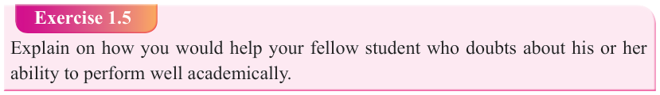

Form Two
Tanzania Institute of Education (TIE)


Bible Knowledge
10

Isaac, and Jacob. He did not doubt that his call was from God the Highest, because he heard it with his own ears. However, Moses did not receive God’s call unswervingly, he had excuses. The responses of Moses to his call are also called excuses.
Excuse of lack of confidence
Moses’ first response to God’s call was the excuse of lack of confidence. In other words, he said “I am not good enough.” It is found in Exodus 3:11, where the
Scripture states, “And Moses said to God, “Who am I, that I should go to Pharaoh, and that I should bring forth the sons of Israel out of Egypt?” With this, Moses said that he was not worthy of the great task to which God was calling him. This feeling of unworthiness was a feeling of being undeserving, valueless and inadequate. In response to Moses’ statement of unworthiness, God said, “But, I will be with you”
(Exodus 3:12). With this statement God promised to be with Moses in his mission.
Exercise 1.5
Explain on how you would help your fellow student who doubts about his or her ability to perform well academically.
Excuse for lack of knowledge of God’s name
Moses’ second response to God’s call was lack of knowledge to God’s name (Exodus
3:13-16). The Scripture states, “And Moses said to the Lord, If, when I come to the people of Israel, and say to them, “The God of your Fathers has sent me to you”; and they shall say to me, “What is His name?” What shall I say to them?’ With this statement Moses feared that Israel would reject him if he did not know the specific name of God, who had called him to deliver the nation. Because Israel knew the specific names of the Egyptian gods, Moses wanted to tell the people that the one and true God of Israel had sent him. Moses feared that the people would not respond to the authority in which he was coming with to them. He remembered what was said to him the last time he tried to deliver the children of Israel (Exodus 2:11-14). When
Moses told an Israelite that he was wrong in fighting a brother, a fellow Israelite, the man replied, “Who made you a prince and a judge over us?” The rejection made a lasting impression, consequently, Moses asked the Lord to reveal his name before he goes to people for the second time. God said to Moses: “I AM WHO I AM.”
(Exodus 3:14). Thus, you shall say to the children of Israel, I AM has sent me to you.” By revealing to Moses His name, God gave him the key to overcome his fear of rejection. In essence, God told Moses that if the people rejected him, they would be rejecting God Himself. In the confidence of God’s name, Moses would take courage and go forth to deliver God’s people.